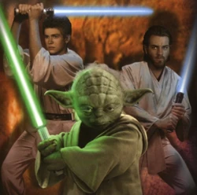
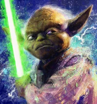
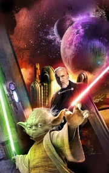

Йода (англ. Yoda) — гранд-мастер Ордена джедаев, был одним из самых сильных и мудрых джедаев своего времени. Место в Совете получил спустя примерно сотню лет после рождения. Обладая долголетием, он достиг титула гранд-мастера в возрасте примерно 600 лет. Йода сумел выжить во время приказа 66. После неудачной дуэли с Дартом Сидиусом ушел в добровольное изгнание на планету Дагоба, где и умер естественной смертью в 4 ПБЯ. Родная планета и раса Йоды неизвестны. Магистр Йода был одним из сильнейших джедаев своего времени. Он был самым мудрым из них. Во владении световым мечом с Йодой могли сравниться только Мейс Винду, Энакин Скайуокер, Оби-Ван Кеноби, граф Дуку и Дарт Сидиус.
 О ранних годах жизни Йоды известно очень мало. Он был родом с отдалённой планеты, но с какой — остаётся тайной.[7] Согласно одной из легенд,[6] до определённого возраста он не осознавал свою чувствительность к Силе.[5][7] Его путь как джедая начался, когда он покинул родную планету вместе с другом-человеком, также не подозревавшем о чувствительности к Силе. На старом, едва пригодном к эксплуатации корабле они отправились в Центральные Миры[5] в надежде найти там работу.[5][7] Однако задолго до достижения цели, их судно столкнулось с большим астероидом и получило такие повреждения, что отремонтировать его силами экипажа не представлялось возможным. В течение нескольких дней они дрейфовали в космосе, причём на сигналы бедствия никто не откликался, а запасы кислорода и провизии уже подходили к концу. Йода и его друг уже готовились встретить смерть, когда сенсоры засекли недалеко от них звёздную систему.[5]Истратив последнее топливо, друзья отправились туда и совершили аварийную посадку[5][7] на неизвестной болотистой планете, окутанной плотным туманом.[5] Там их обнаружил мастер-джедай Н'ката Дель Гормо, принадлежавший к расе хисалриан. Он сообщил будущим ученикам об их потенциале, привёл в свой дом и начал обучать. Через некоторое время после того, как обучение было окончено, проходивший мимо корабль Галактической Республики принял их сигнал бедствия и спас друзей, которые к тому времени уже стали джедаями.[5] Тем не менее, покинув планету и добравшись до Корусанта, Йода вступил в ряды Ордена как младший джедай.[8] О периоде его обучения в Храме джедаев на Корусанте известно лишь то, что он ещё успел застать в живых легендарную Фэй Ковен.[9] По прошествии времени Йода проявил себя как умелый джедай. В конце концов под руководством дроида-архитектора Хьюянга он сконструировал свой световой меч.[8]
 В 33 ДБЯ Совет джедаев получил сообщение, отправленное четырьмя стандартными днями ранее. Оно содержало информацию об атаке на Мэйвич-7, предпринятой йинчорри. После того, как об этом было доложено Верховному канцлеру Финису Валоруму, он попросил Мейса Винду послать для переговоров двоих джедаев. Однако агрессивные йинчорри не просто убили парламентёров, но и отправили их обезображенные тела на Корусант, рассчитывая этим запугать Сенат и Орден.[18] Результат их действий оказался прямо противоположным: Совет направил в систему Йинчорри ударную команду из двенадцати джедаев под командованием Мейса Винду. Сообщение о столкновении ударной команды с силами йинчорри, полученное Советом, насторожило и обеспокоило миниатюрного гранд-мастера, так как он ощущал в Силе исходящую от них опасность. Присущее Йоде чутьё на опасность его не подвело: йинчорри в ответ предприняли рейд на Храм джедаев.[18] Рейд на Храм джедаев
 Мастер-джедай «Секрет хочешь тебе открою? Гранд-мастер Ордена джедаев я! В лотерею это звание я выиграл, по-твоему? «Откуда вы знаете, откуда вы знаете, учитель Йода?» Учитель Йода знает такие вещи. Его работа это». — Йода (источник) Йода получил звание рыцаря-джедая в возрасте 50 лет. Около 800 ДБЯ он взял себе ученика, который стал одним из многих его падаванов за прожитые им столетия. В возрасте 96 лет он стал мастером-джедаем, а позднее был избран в Высший совет. Он был одним из магистров-джедаев, которые организовали передвижную академию на борту межзвёздного корабля Чу’унтор, построенного около 500 ДБЯ. После того, как в 230 ДБЯ судно разбилось на Датомире, Йода и другие джедаи сражались со знаменитыми датомирскими ведьмами. Оказавшись в патовой ситуации, он передал на хранение местной девушке по имени Релл ларец с голозаписями, содержавшими информацию о джедайских учениях и техниках, предсказав, что однажды за этими записями придёт джедай, который спасёт планету от тьмы и будет учить их детей путям Силы. Более двухсот лет спустя эти записи нашёл Люк Скайуокер. Удивительно, но Релл была к тому времени ещё жива и ждала его.[10] Однажды Йода отправился в поисках нового ученика на планету Кашиба. Там среди миниатюрных кашибанцев мастер-джедай обнаружил юного Икрита, проявившего могущество в Силе, и взял его в ученики. Позднее, уже став рыцарем, Икрит во время пустякового спора потерял над собой контроль и едва не убил световым мечом своего друга, притом что Йода рисковал жизнью, чтобы остановить его. Потрясённый случившимся, Икрит навсегда отказался от использования светового меча.[11] Хатт Белдорион покинул Орден около 400 ДБЯ. В 13 ПБЯ в разговоре с принцессой Леей он назвал Йоду одним из «великих учителей древности», который уже тогда был достоин сравнения с такими выдающимися мастерами, как Номи Санрайдер и её учитель Тон (оба жили примерно на 3500 лет ранее).[12] В 200 ДБЯ Йода, наряду с другими мастерами того времени, обнаружил, что форма Силы начинает течь, становясь мутной и неопределённой. Изучив страшную тайну в молчаливой медитации, Высший совет джедаев, в котором Йода был в то время старейшим членом, пришёл к единогласному выводу: мощь Тёмной стороны росла. Хотя Совет и другие джедаи считали, что это показывает растущую активность ситхов или других адептов Тёмной стороны, Йода предположил возможность того, что затемнение в Силе может предвещать скорое пришествие Избранного, который, согласно пророчеству, должен восстановить равновесие в Силе. В противовес этой теории некоторые молодые джедаи оспорили предположения Йоды и образовали раскольническую секту — Потенциум. Их ересь не приветствовалась Советом, и в 130 ДБЯ Йода возглавил кампанию по изгнанию членов секты из Ордена.[13]